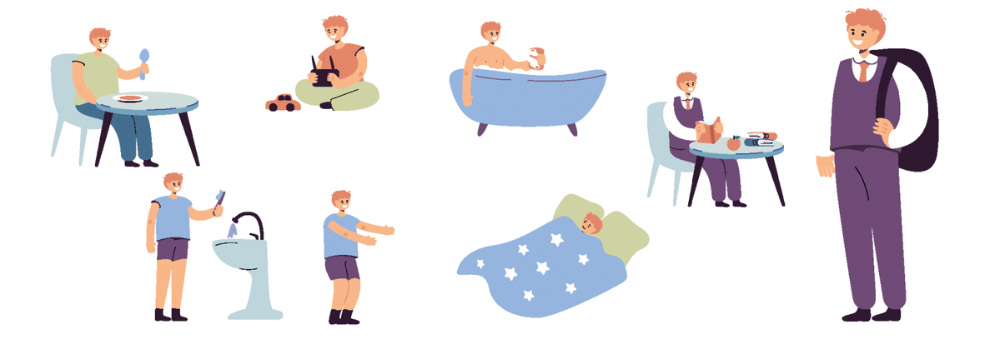
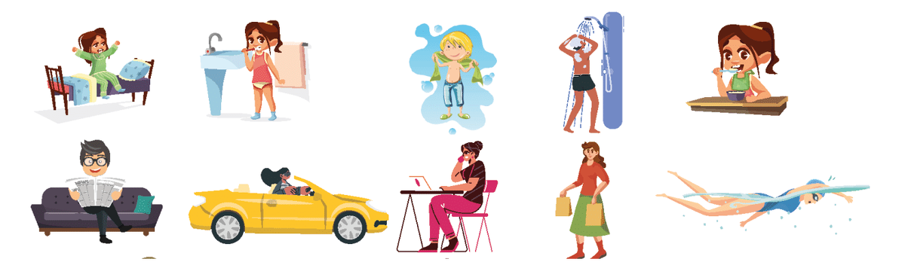
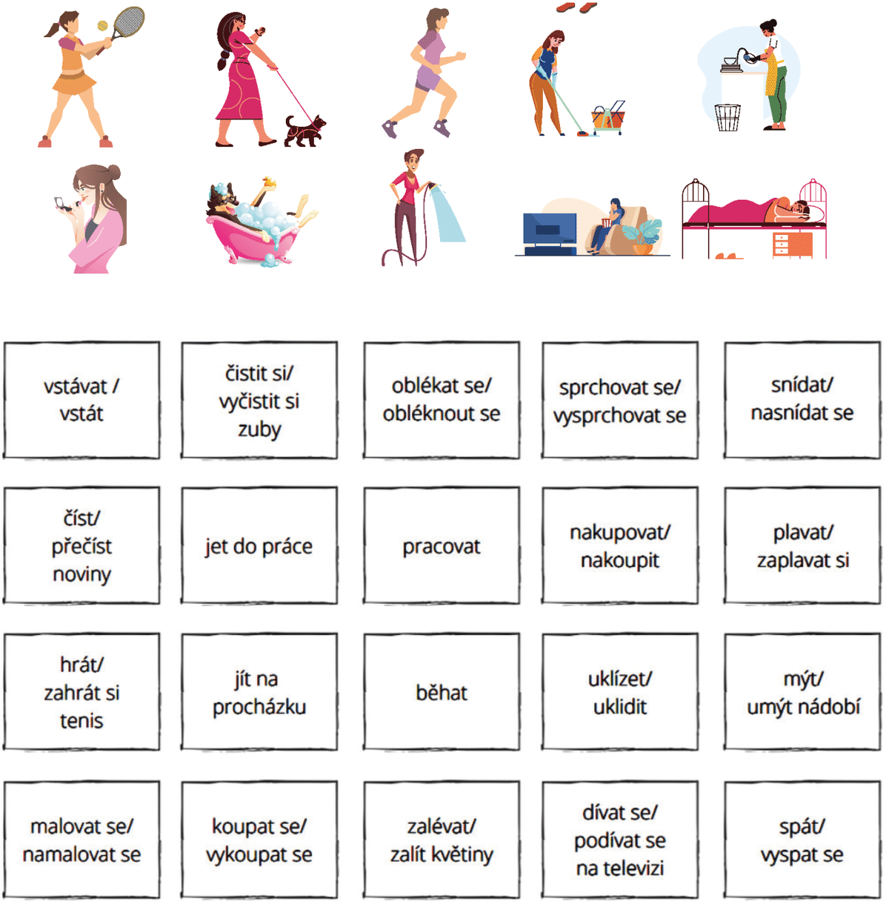
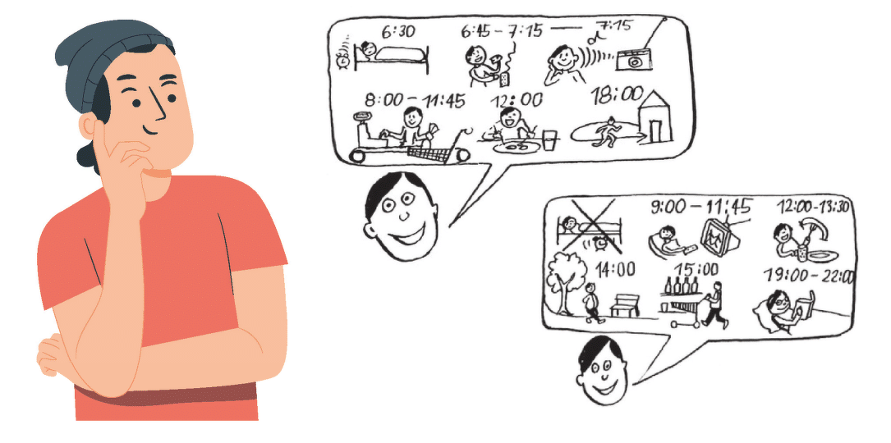

1) Our old grandfather does not shave his legs because he is a man.
2) I need soap and a towel because I am taking a shower.
3) We want to buy a razor because it is a good gift.
4) On weekends they do not relax at home.
5) I clean the house every day.
2. Podívejte se na obrázky a ke každému obrázku se pokuste vymyslet co nejvíce slov, která s ním můžou být spojena.

3. Podívejte se na následující obrázky a vymyslete alespoň 10 vět, kde každá věta bude mít minimálně 5 slov.
Poznámka: Pokud neznáte všechna slovesa, použijte obrázek číslo 2, a vyberte si slova, která se Vám mohou hodit.Vzor: Moje stará babička vstává každé ráno.


4. Podívejte se na následující obrázky a řekněte, co dělá / nedělá Pavel každý den a o víkendu.

5. Podívejte se na následující dialog v angličtině, zkuste si tento dialog přeložit.
Poznámka: překlad nemusí být doslovný
Dialogue. Jan and Maria.
Jan: So, what does your day look like, Maria? You look bad.Maria: You're right. Every day I have a lot of work. I only rest on weekends.Jan: Are you saying that you work every day?Maria: Yes, I study and work every day. That's why I have one day off.Jan: Yeah. What's a typical work day like for you?Maria: I get up at 6:30 in the morning. Then I wash my face, have breakfast, put on clothes and do my makeup. I have to leave at 7:30 because I dare not be late.Jan: Do you study and work?Maria: Yes. I study until lunch and then work until 6 pm.Jan: It must be difficult.
POZNÁMKY:
vypadat - look
proto - therefore
líčit se - to do makeup
o víkendu - on the weekend
protože - because
asi - must be, probably
6. Podívejte se na následující odpovědi a vytvořte otázky.
Vzor: Probudím se díky budíku. -> Co ti pomáhá se probudit?
1) Dnes chci vařit zeleninovou polévku.
2) Nechceme vstávat tak brzo, protože jsme unavení.
3) Oni hledají svůj svetr, protože je to dárek od maminky.
4) Soňa poslouchá klasickou hudbu ve svém pokoji.
5) O víkendu chodíme vždy do kina na nějaký zajímavý film.
7.1. Skřivánek nebo sova?
Eva a Petr chtějí žít spolu a plánují svatbu. Mají ale jeden problém. Petr je «skřivánek» a Eva je «sova». Co si myslíte, že to znamená?
1) Když je někdo «skřivánek», znamená to, že:
a) je hezký.
b) dobře vidí.
c) vstává brzy ráno a jde spát brzy večer.
2) Když je někdo «sova», znamená to, že:
a) je starý.
b) vstává pozdě dopoledne a jde spát pozdě večer.
c) špatně vidí.
7.2. Co dělají Eva a Petr každý den? Přečtěte si text a odpovídejte na otázky.
Eva říká:
«Strašně nerada vstávám brzy! Vstávám obvykle v 10 hodin, ale o víkendu klidně až ve 12. Nikdy nesnídám, jenom piju zelený čaj. Jím až v poledne. Odpoledne jsem obvykle ve škole a učím češtinu. Ráda tancuju a cvičím, a také mám třikrát za týden aerobik, zumbu a jógu. Večeřím obvykle v 9 večer. V noci ještě pracuju na počítači, plánuju lekce a píšu e-maily. Pak se dívám na televizi nebo čtu. Moc ráda čtu, mám ráda hlavně historické romány.»
Petr říká:
«Rád vstávám brzy ráno, každý den vstávám už v 6 hodin. Snídám, čtu noviny na internetu a piju kávu. V 8 jedu do školy. Dopoledne máme většinou přednášky a semináře. Odpoledne a někdy i večer mám zase školu. Když mám čas, jdu na tenis nebo na fotbal. Taky rád vařím, a proto často nakupuju a dělám teplou večeři. Večeřím většinou v 7 hodin. Potom se učím, ale když mám čas, rád se dívám na filmy a poslouchám hudbu. Mám rád hlavně akční filmy a techno.»
Otázky.
1) Kdy vstává Eva ve všední dny a o víkendu?
2) Kdy vstává Petr?
3) Kdo nesnídá?
4) Kdy je Petr ve škole?
5) Kde je Eva odpoledne?
6) Kdo rád vaří?
7) Kdo rád čte?
8) Kdo má rád akční filmy?
9) Kdo má rád historické romány?
10) Kdy Eva a Petr večeří?
8.1. Marinina spolužačka Mai má narozeniny a zve Marinu na party, ale Marina nemůže. Čtěte jejich e-maily.
Komu: marina.kaz@gmail.comPředmět: Party
Ahoj Marino,
co děláš v pátek? Mám narozeniny a zvu tě na party! Party bude v restauraci U Krokodýla (www.ukrokodyla.cz), máme rezervaci od šesti večer.
Zdravím,
Mai
Komu: linh.mai@gmail.comPředmět: Re: party
Ahoj Marino,
Ahoj Mai,
omlouvám se, ale v pátek bohužel nemůžu, mám moc práce. Máme teď ve firmě auditory. Musím být denně v práci už od sedmi hodin ráno. Od osmi do dvanácti máme školení, pak máme společný oběd a od tří do šesti mám zase školení. V sedm večer jdu na večeři s Tomem. Máme výročí, víš? Chodíme spolu už měsíc :-)! Můžeme se sejít někdy příští týden? Zvu tě na oběd. Hodí se ti to třeba v pondělí?
Měj se hezky,
Marina
8.2. Marinina spolužačka Mai má narozeniny a zve Marinu na party, ale Marina nemůže. Označte, co je, nebo není pravda.
9. Odpovězte na následující otázky.
1) V kolik hodin vstáváte?
2) Co děláte kartáčkem na zuby?
3) Co děláte žehličkou?
4) Co dělá Váš strýc holícím strojkem?
5) Co děláte v práci každý den?
6) Co děláte před tím, než jdete spát?
7) V kolik hodin končíte v práci/ve škole?
8) Jaký máte každodenní rituál?
9) Co je první věc, kterou děláte po tom, co se probudíte?
10.Read the dialogues, translate unfamiliar words. Listen to the audio without looking at the text and practice your listening comprehension. Repeat out loud; if you wish, you can record yourself on a voice recorder and compare the difference.
Dialog 1.
A: Ahoj!
B: Ahoj, to je pro tebe, Jano.
A: Jé. To je ale krásná kytka!
B: Fakt?
A: Ano, opravdu je moc krásná.
B: To jsem rád. Tak co? Jdeme na večeři?
A: Jo, jdeme. Víš už kam?
B: Ano, jedna skvělá restaurace je tamhle.
A: Dobře. Ano, tu znám. Myslím, že je tam bohužel zavřeno.
B: Nééé, tak jdeme. Snad je otevřeno.
Dialog 2.
A: Ahoj, mami.
B: Dobré ráno, Michale. Tady máš snídani.
A: Díky.
B: Tady máš snídani, říkám. Kam jdeš? Už je 8.30.
A: Jdu … eee … do koupelny. Vyčistím si zuby a hned jsem tady.
B: Dobře. Potřebuješ ještě něco? Já už musím jít, spěchám do práce.
A: Aha, tak hezký den.
B: Ahoj. Jo a doufám, že máš hotové úkoly?!
A: Jistě, mami.
B: Opravdu je mě?
A: Mami, nejsem dítě.
B: Dobže, tak ahoj.
A: Ahoj.
Dialog 3.
A: V kolik jdeě na oběd?
B: Asi za hodinu.
A: Cože? Za hodinu?
B: No, hodinu nebo … potřebuju jeětě minimálně 30 minut.
A: Co to děláš?
B: Mám tady něco pro firmu LARINT.
A: Aha, tak ty děláš tu práci pro LARINT?
B: Ano, to dělám já.
A: Prý je to moc těžké.
B: Ale! To si nemyslím. Potřebuje to jen čas.
A: Jen čas? Ne, ty jsi opravdu dobrá.
B: Prosím tě … Chceš tady na mě 30 minut čekat? Pak můžu jít na ten oběd.